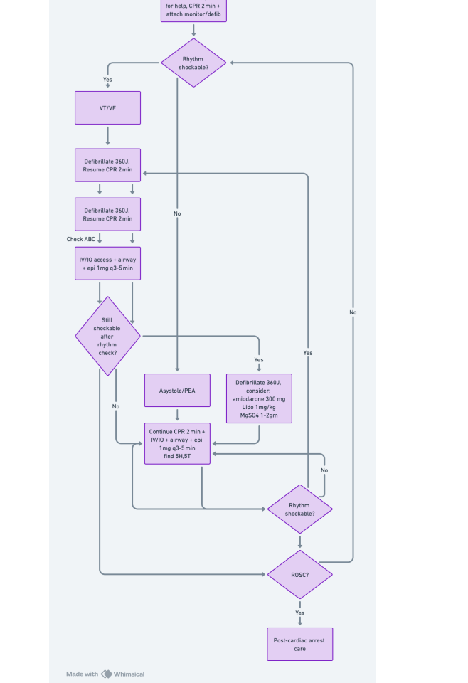
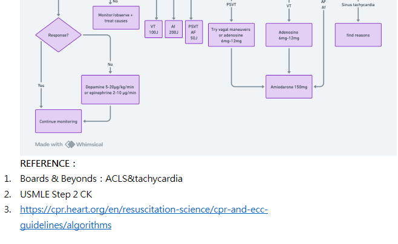

ACLS
Monday, March 24, 2025
3:19 PM


使用 OneNote 建立。
![BLS
叫叫CAB
評估反應 & 呼吸（確認無反應+無呼吸）
撥打急救電話（Activate EMS）
檢查脈搏，若無，立即開始 CPR
胸外按壓速率：100-120 次/分鐘
深度：成人至少 5 cm，兒童 5 cm，嬰兒約 4 cm
壓胸與放鬆時間相等
成人壓吹比：30:2
使用 AED，檢查是否為可電擊心律
若為VF或pulseless VT則立即電擊，電擊後立即開始2分鐘CPR
若為PEA或asystole則不可電擊，立刻CPR 2分鐘，並每兩分鐘檢查心律，直到病人會動或是專業團隊接手。
ACLS
ACLS（Advanced Cardiac Life Support，高級心臟救命術）主要適用於
成人心搏驟停（Cardiac Arrest）、無脈搏心律異常（如 PEA, pulseless VT）、急性冠症候群（ACS）、中風（Stroke）等緊急狀況。
Cardiac Arrest 指的是心臟突然停止有效泵血，導致血流動力學崩潰（hemodynamic collapse），若未即時處置，將迅速導致死亡。
四種常見的 Cardiac Arrest 心律類型：
Ventricular Fibrillation (VF, 心室顫動)
最常見的可電擊心律
心室無組織性顫動，無有效收縮 → 無心輸出量
ECG 特徵： 快速、雜亂的波動，無明顯 P 波、QRS 波或 T 波
處置： 立即去顫（Defibrillation）+ CPR + Epinephrine
Pulseless Ventricular Tachycardia (pVT, 無脈搏心室頻脈)
心室快速規律收縮但無效排血 → 無脈搏
ECG 特徵： 寬大且規則的 QRS 波（通常 >0.12 秒），無 P 波
處置： 立即去顫（Defibrillation）+ CPR + Amiodarone
Pulseless Electrical Activity (PEA, 無脈搏電氣活動)
ECG 顯示有組織性電氣活動（如正常竇性或緩慢心律），但無有效脈搏](18898996d43c43f19bb858772e7e1bf0_asset_0.png)
![ECG 顯示有組織性電氣活動（如正常竇性或緩慢心律），但無有效脈搏
常見原因： 5H & 5T（如低血容量、低氧、心包填塞、肺栓塞等）
處置： CPR + Epinephrine + 處理可逆原因（H’s & T’s）
不可電擊心
Asystole (心靜止)
完全無心臟電氣活動 → 平直線（Flatline）
ECG 特徵： 等電位直線（注意與 Lead 脫落區分）
處置： CPR + Epinephrine + 尋找可逆原因
不可電擊心律
ACLS 在心搏驟停時的核心流程
確認狀況及求援
評估患者反應（無反應，無正常呼吸/喘息）
啟動急救系統（Activate emergency response system）
開始高品質 CPR（Chest compression 30:2，速率 100-120/min，深度至少 5 cm）
盡快使用 AED（若可用）
供氧與監測
給予氧氣（Apply Oxygen）：
使用 Bag-Valve-Mask（BVM）與 100% 氧氣
若有條件可進行進階氣道（如氣管插管）
連接心律監測（Attach Monitor/Defibrillator）：
使用 AED 或 Manual Defibrillator
進行心律分析（Rhythm Analysis）
分析心律（Rhythm Analysis）
使用 Defibrillator/AED 檢查心律，分為兩大類：
可電擊心律（Shockable Rhythms）
Ventricular fibrillation (VF, 心室顫動)
Pulseless ventricular tachycardia (pVT, 無脈搏心室頻脈)
立即200J去顫（Defibrillation）
繼續 CPR 2 分鐘，然後重新評估心律
同時給予 Epinephrine 1 mg（每 3-5 分鐘一次）
若仍為可電擊心律，給Amiodarone 300 mg（可追加 150 mg）](18898996d43c43f19bb858772e7e1bf0_asset_1.png)
![若仍為可電擊心律，給Amiodarone 300 mg（可追加 150 mg）
不可電擊心律（Non-shockable Rhythms）
Asystole（心靜止）
Pulseless Electrical Activity (PEA, 無脈搏電氣活動)
繼續 CPR 2 分鐘，不電擊
立即給 Epinephrine 1 mg（每3-5分鐘一次）
尋找可逆因素（H's & T's）
可逆因素（H's & T's）
在處理 PEA 或 Asystole 時，應積極尋找並處理可逆因素：
H's（5H）：
Hypovolemia（低血容量）
Hypoxia（低氧）
Hydrogen ion (Acidosis)（酸中毒）
Hyper/Hypokalemia（高鉀/低鉀）
Hypothermia（低溫）
T's（5T）：
Tension pneumothorax（張力性氣胸）
Tamponade (cardiac)（心臟填塞）
Toxins（毒物/藥物過量，如 opioid, TCA）
Thrombosis (pulmonary or coronary)（肺栓塞/心肌梗塞）
Trauma（創傷）
循環恢復（ROSC, Return of Spontaneous Circulation）
若有心跳恢復，進入 Post-Cardiac Arrest Care
維持 SpO₂ 94-99%
維持血壓（SBP ≥90 mmHg, MAP ≥65 mmHg）
若患者無意識，考慮 Targeted Temperature Management (TTM, 32-36°C, 24-48 小時）
尋找原發原因（如心導管檢查）
持續監測，預防再發作
Untitled picture.png
ACLS flowchart](18898996d43c43f19bb858772e7e1bf0_asset_2.png)
![Untitled picture.png
ACLS 心搏過緩處置流程
初步評估
確認心搏過緩定義：
心率 < 50 bpm（但臨床意義取決於症狀與血流狀況）
評估生命徵象與症狀：
血壓、呼吸、意識狀態
有無低灌流症狀（Poor Perfusion Signs）：
意識改變（如意識不清、嗜睡）
低血壓或休克跡象
胸痛
呼吸困難
急性心衰竭徵象
情況是否穩定？
情況
處置
無症狀/血流穩定
觀察、持續監測、尋找病因
有症狀/血流不穩
進行藥物或TCP治療
積極處置（若出現症狀）
藥物治療順序：
Atropine
劑量： 0.5 mg IV 每 3-5 分鐘一次
最大劑量： 3 mg
作用： 阻斷迷走神經刺激，增加心率
若 Atropine 無效 → 考慮以下選項：
Dopamine（多巴胺）
劑量：2-20 mcg/kg/min IV（依反應調整）
增加心輸出量與心率
Epinephrine（腎上腺素）
劑量：2-10 mcg/min IV
正性心肌作用，增加心率與血壓
經皮心臟節律器（Transcutaneous Pacing, TCP）
適用於：
Atropine 無效或反應不佳
高度房室傳導阻滯（如 Mobitz II, 完全房室傳導阻滯）
重度症狀或不穩定狀況](18898996d43c43f19bb858772e7e1bf0_asset_4.png)
![重度症狀或不穩定狀況
繼續管理與考慮病因
糾正可能的可逆原因（H's & T's）：
Hypoxia、Hypovolemia、Hypothermia、Hyper/Hypokalemia
Tension pneumothorax、Tamponade、Toxins、Thrombosis（MI/PE）
考慮永久性節律器（Pacemaker）的適應症
ACLS心博過速處置流程
初步評估
確認心搏過速定義：
成人心率 > 150 bpm
評估生命徵象與症狀：
血壓、呼吸、意識狀態
有無低灌流症狀（Poor Perfusion Signs）：
意識改變（如意識不清、嗜睡）
低血壓或休克跡象
胸痛
呼吸困難
急性心衰竭徵象
情況是否穩定？
情況
處置
不穩定（有症狀）
立即同步電復律（Synchronized Cardioversion）
穩定（無症狀）
根據 QRS 波型進行藥物治療
穩定型心搏過速：藥物處置
窄 QRS 複合波（<0.12 秒） → 可能為 SVT 或 AF
迷走神經刺激法（Vagal maneuvers）：
咳嗽、Valsalva maneuver 或冷水刺激
Adenosine（腺苷）：
劑量： 6 mg IV push → 無效可追加 12 mg
快速注射並緊接 20 mL 生理食鹽水沖洗
若 Adenosine 無效 → 考慮：](18898996d43c43f19bb858772e7e1bf0_asset_5.png)
![若 Adenosine 無效 → 考慮：
Beta-blockers（如 Metoprolol）
Calcium channel blockers（如 Diltiazem）
針對 AFib/AFlutter： 使用抗心律不整藥（如 Amiodarone）
寬 QRS 複合波（≥0.12 秒） → 可能為 VT/VF 或 SVT with aberrancy
考慮 Amiodarone、Procainamide 或 Sotalol：
Amiodarone： 150 mg IV over 10 分鐘，必要時可再重複
若懷疑為 Torsades de Pointes（多形性 VT）：
Magnesium sulfate 2 g IV
若為 WPW 症候群合併 AFib → 禁用 AV node 阻斷藥物（如 CCB, BB）
若症狀惡化或無效 → 考慮同步電復律
不穩定型心搏過速：立即同步電擊（synchronized cardioversion）
適用於以下情況：
低血壓、意識改變、胸痛或急性心衰竭
同步電復律劑量建議：
Narrow Regular（SVT）： 50-100 J
Narrow Irregular（AFib）： 120-200 J
Wide Regular（VT）： 100 J
Wide Irregular（VF 或多形性 VT）： 非同步電擊（Defibrillation）
考慮可逆原因（H's & T's）：
Hypoxia、Hypovolemia、Hyper/Hypokalemia、Hypothermia
Tension pneumothorax、Tamponade、Toxins、Thrombosis（MI/PE）
Untitled picture.png
心博過緩和心博過速flowchart](18898996d43c43f19bb858772e7e1bf0_asset_6.png)